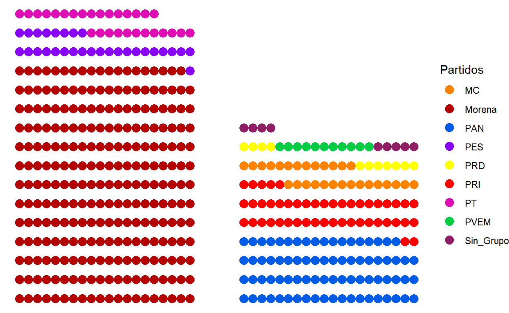

El próximo año hay elecciones federales y locales. Pero, ¿qué significa esto? En este post quiero explicar de manera muy sencilla la elección de diputaciones.
¡Bienvenidas! Espero que estén muy bien, que se estén quedando en casa y que sus seres queridos estén sanas y salvas.
Si me conocen, saben que estudié Ciencia Política y creo que todo es conflicto y caos en la vida. Las elecciones son esos pequeños eventos que nos dan rienda suelta para criticar todo y empezar a inventarnos historias y escenarios plausibles y posibles.
Pero, lo más importante es como afecta la política en nuestra vida diaria. En primer lugar, la política es esa profesión en la que unass personas deciden la distribución de bienes y servicios públios, mientras otro grupo (mucho mayor) evalúa a los primeros y decide sí estas deben continuar en el puesto. En otras palabras, la política es un trabajo.
Ahora, el mundo se ha vuelto cada vez más complejo, y nunca tenemos tiempo para ocuparnos de todas las cosas que deberían importarnos. Una de esas cosas es la política, y cómo es un trabajo pues habrá gente dispuesta a hacerlo. Además, hay distintos tipos de trabajo en el mundo de la política, pero concentremonos en lo que va a pasar el próximo año.
En 2021 hay una elección federal: diputaciones. Hay 3 tipos de trabajos en la política federal: Presidenta de la República, Senadora y Diputada (a estos últimos dos también se les llama legisladoras). Los primeros dos puestos, Presidencia y Senadurías, duran 6 años y el último, diputaciones, 3 años. Pero, los últimos dos, Senadurías y Diputaciones, pueden reelegirse hasta por 12 años.
Esto significa que: 1. Las senadoras pueden competir y ganar en dos elecciones. 2. Las diputadas pueden hacer esto en cuatro elecciones.
Ahora, en la Cámara de Diputados hay 500 puestos de trabajo que se compiten por las elecciones. Pero, solo 300 se eligen directamente, y el resto, 200, se eligen de manera indirecta. Y ustedes me dirán, y ¿cómo voy a meter código aquí? Pues, grafiquemos la actual composición de la Cámara de Diputados
Aquí agregué el paquete ggparliament, que nos ayuda a visualizar la composición de los congresos, solo hay que ajustar nuestros datos. Si le dan clic viene un vignette con ejemplos de como transformar los datos.
dip <- read.csv(paste(inp, "integracion_diputados(2000_2018) - Hoja1.csv", sep = "/"), encoding = "UTF-8") %>%
filter(year==2018) %>%
mutate(
oficialismo = case_when(
GP == "Morena" ~ 1,
GP == "PES" ~ 1,
GP == "PT" ~ 1,
T ~ 0
)
)
dip18 <- dip %>%
parliament_data(
#election_data = .,
party_seats = .$Total,
group = .$oficialismo,
parl_rows = 20,
type = "opposing_benches"
)
Los datos que ocupé son del Centro de Estudios Alonso Lujambio y el proyecto de su director el Dr. Horacio Vives Segl. En este caso, para la gráfica hay que poner una variable de oficialismo (es decir el partido o partidos en el gobierno). Como es una variable dicotómica, solo puede tener dos valores: que el partiddo sí pertenezca a la coalición gobernante (Morena, PES y PT), o que no pertenezca. Esto se representa usualmente con valores de 1 (oficialismo) o 0.
partidos <- c(
"Morena" = "#b30000",
"PAN" = "#005ce6",
"PRI" = "#ff0000",
"PES" = "#8701F7",
"PT" = "#DD0FB4",
"MC" = "#ff8300",
"PRD" = "#ffff00",
"PVEM" = "#00cc44",
"Sin_Grupo" = "#8f1e64"
)
ggplot(dip18, aes(x, y, colour = GP)) +
scale_color_manual(values = partidos, name = "Partidos") +
geom_parliament_seats() +
theme_ggparliament()

En el vector “partidos” viene relacionado el nombre el partido con su color correspondiente, luego en una de las capas de ggplot lo colocamos de manera manual. Lo que resulta evidente es que alrededor de 2/3 de la cámara de diputados está en manos del oficialismo. Y ustedes dirán, ¿y eso qué tiene que ver con la navidad?
Pues, no mucho realmente, peeeero, la cámara de diputados tiene actividades que impactan en nuestra vida diaria: 1. Apreuban el presupuesto del gobierno federal: las estancias infantiles, la guardia nacional, los programas de liconsa, los apoyos de agricultores (PROCAMPO), el gasto de gran parte de a educación, todo eso lo aprueban esas personas. 2. Aprueban leyes que posibilitan nuevas actividades para el gobierno. Esto lo hacen junto con la Cámara de senadores, pero a ellas les faltan otros 3 años en el cargo.
Y aquí salen más dudas: ¿No es mejor que pocos partidos tengan control de gobierno? Y puede ser que sí, si no te interesa la transparencia (saber qué y por qué un gobierno hace las cosas) y si no te interesa la rendición de cuentas (si se equivocan, saber a quién echarle la culpa y pensar en como solucionarlo).
Y puede que hoy no te importe, pero, qué pasa si durante este año te fue mal y no hubo manera de agarrar alguna ayuda del gobierno? Yo no votaría por ellos de nuevo.
Bueno, ya vimos que Morena y sus compinches tienen la cámara de diputados. Y uno pensaría que desde el PRI este tipo de cosas no debería pasar. Y tienen razón!! Pero, “hecha la ley, hecha la trampa”. No hemos hablado de los mecanismos de elección.
Se mencionó que hay 500 puestos de trabajo como diputada federal, pero solo 300 son por elección directa. Esto significa que el país está dividido en 300 pedacitos (llamados distritos electorales federales) y gana la persona que tiene más votos en el distrito.
¿y los otros 200? En ese caso el país se divide en 5 listas done están apuntadas todas las personas que NO compiten. ¿Se acuerdan de Carmen Salinas, flamante diputada federal por el PRI? ¿Recuerdan haber votado por ella? Claro, es porque ella fue diputada de representación proporcional (RP de ahora en adelante).
Esto no quiere decir que deberíamos quitar las diputaciones de RP. Veamos la composición actual y juzguen ustedes:
GP MR RP Total Legislatura year oficialismo
1 Morena 168 91 259 LXIV 2018 1
2 PAN 39 39 78 LXIV 2018 0
3 PRI 9 38 47 LXIV 2018 0
4 PES 29 NA 29 LXIV 2018 1
5 PT 25 3 28 LXIV 2018 1
6 MC 17 11 28 LXIV 2018 0
7 PRD 6 5 11 LXIV 2018 0
8 PVEM 4 7 11 LXIV 2018 0
9 Sin_Grupo 3 6 9 LXIV 2018 0dip %>%
group_by(oficialismo) %>%
summarise(total = sum(Total)) %>%
mutate(porcentaje = total*100/500)
# A tibble: 2 x 3
oficialismo total porcentaje
<dbl> <int> <dbl>
1 0 184 36.8
2 1 316 63.2Si nos concentramos solo en la columna de Mayoría Relativa (MR), es decir los 300 de elección directa, vemos que aún así se llevan al baile a todos los partidos y prácticamente no necesitan negociar para sacar sus temas. Actualmente tienen 63.2% de la cámara, lo que facilita mucho sus decisiones. Pero como muestra la tabla de abajo, si nos quedamos solo con los de MR, solo necesitan convencer a 3 diputadas para tener mayoría calificada (75% de las legisladoras presentes). Con esa mayoría podrían cambiar lo que quieran de la constitución.
# A tibble: 2 x 3
oficialismo total porcentaje
<dbl> <int> <dbl>
1 0 78 26
2 1 222 74Pero esta es una discusión para otro post.
El principal objetivo de este post es recordarles que voten el próximo año. Que estén al pendiente, y que la política es una cosa que afecta nuestras vidas día a día. Tal vez no parece importante ahora, pero es nuestro derecho (votar) y si nos es posible hay que hacerlo.
2021-01-19
El día de hoy, vamos a hablar sobre las lesgisladoras que buscan ser reelectas. En primer lugar, el INE (el organismo encargado de organizar elecciones transparentes con ayuda de ciudadanas apartidistas) estableció los lineamientos para la reelección. Vamos a revisar los puntos más importantes.
Para buscar la reelección, las diputadas deben enviar una carta al INE, a la Cámara de Diputados y al Partido Político al cual pertenecen. Y ya conocemos la lista de diputadas y diputados que buscan reelegirse. ¿Se acuerdan que hay 500 escaños/curules?
Bueno, pues 89.6% (448) quieren reelegirse.
Ahora, ya que dijeron que sí quieren, hay una serie de condiciones que deben cumplir.
Por último, los partidos están obligados a garantizar paridad en las candidaturas, contemplando a las legisladoras que buscan la reelección. Asimismo, ningún candidato puede ser postulado si está inscrito en el registro nacional de personas sancionadas en materia de violencia política en razón de género.
Y a todo esto, ¿quiénes son las legisladoras que buscan la reelección? La lista original pueden consultarla aquí.
origen <- "https://docs.google.com/spreadsheets/d/e/2PACX-1vT_aHplhF1Mm8OcnrVg3y9PI0O-TihXb3Ca4pEhZ825a7nfSkA-a7l7lv3JGkmz8aXZAyc8fbuHgZPm/pub?gid=0&single=true&output=csv"
tabla <- read.csv(origen, fileEncoding = "UTF-8")
La limpié un poco y la puse en un google drive por si ocupan.